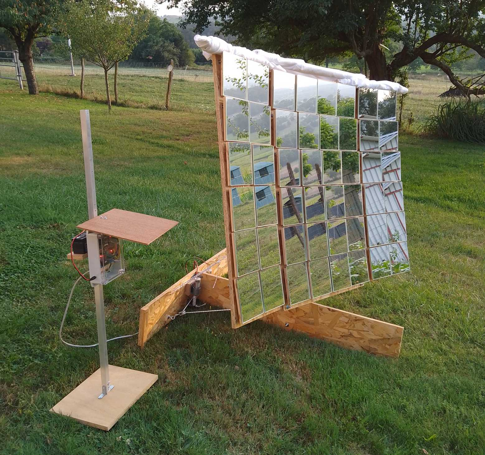

Solar concentrator
In 2023 and 2024 I designed and built a solar concentrator:
This project is open-source and documented in detail here.
 Orientable panel (clic here to open the 3D model)
Orientable panel (clic here to open the 3D model)
One of the challenges of this project was to embed all the algorithms on a low-cost microcontroller board:
- Processor: ESP32 at 240 MHz
- RAM: 520 Kb + 4 Mb (PSRAM)
- Camera sensor: OV2640
- Price: 12€
All the code was successfully implemented on this platform:
- high-level application logic
- user interface (embedded http server accessible via WiFi)
- image acquisition and processing
- motor regulation and control
Prototype of the orientable panel with the supervisor